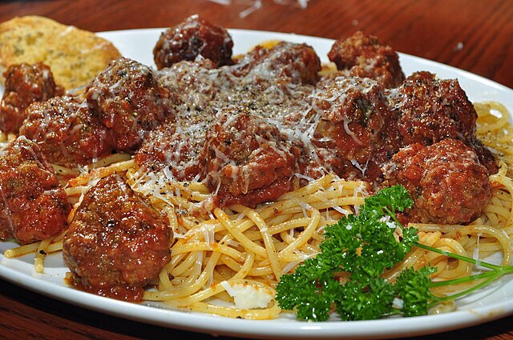

Spaghetti and meatballs is a much-loved family favourite, combining tender homemade meatballs with a rich, garlicky tomato sauce, all served over a bed of spaghetti. It’s satisfying, flavourful, and surprisingly easy to make from scratch. Ideal for a midweek dinner or something a bit special on the weekend.
For the tomato sauce:
To Serve:
In a large bowl, combine the mince, grated onion, garlic, breadcrumbs, egg, parsley, oregano, salt, and pepper. Mix gently with your hands until well combined, then shape into small balls (around 16–20). Place on a plate and chill for 15 minutes if you have time — this helps them hold their shape.
Heat 1 tablespoon of olive oil in a large frying pan over medium heat. Fry the meatballs in batches for 6–8 minutes until browned all over. Remove and set aside (they don’t need to be fully cooked yet).
In the same pan, add a little more oil if needed and gently cook the garlic for a minute until fragrant. Pour in the chopped tomatoes, tomato purée, dried herbs, and sugar. Season with salt and pepper. Simmer gently for 10 minutes.
Return the browned meatballs to the pan and simmer for a further 15–20 minutes, partially covered, until the meatballs are cooked through and the sauce is thickened.
Meanwhile, bring a large pan of salted water to the boil and cook the spaghetti according to the packet instructions. Drain and reserve a little cooking water.
Toss the drained spaghetti with a ladle of sauce, adding a splash of the reserved water if needed. Plate up and top with meatballs and extra sauce. Sprinkle with grated Parmesan and herbs if using.